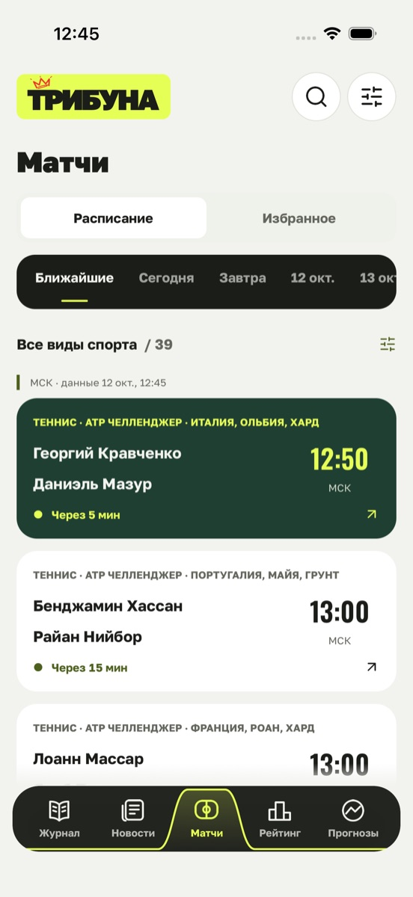
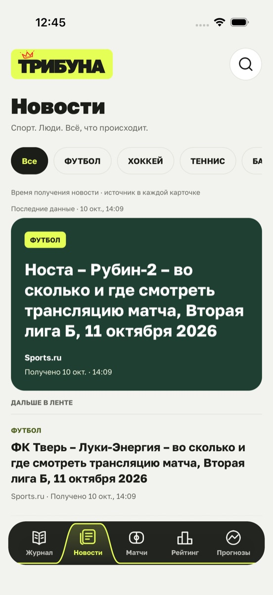
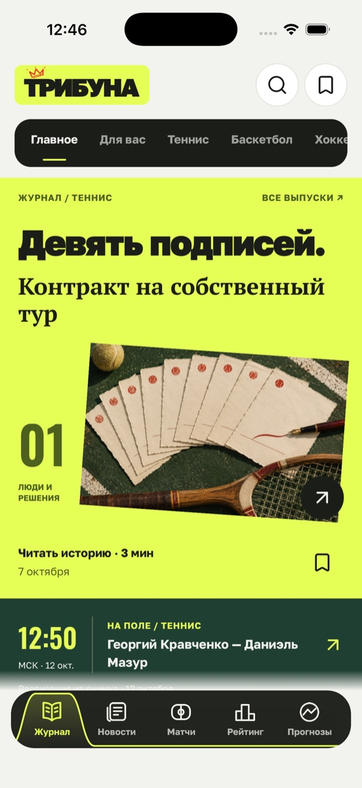
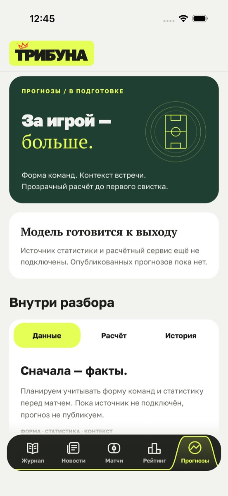

01
Журнал
Большие истории о спорте и людях в нём. Рубрики по видам спорта, выпуски и поиск по журналу.
- Рубрики
- Все выпуски
- Поиск
Мобильное приложение · рабочая версия
Журнал, новости, матчи, рейтинг букмекеров и раздел прогнозов — пять разделов в одном приложении.



01 / Что внутри
01
Большие истории о спорте и людях в нём. Рубрики по видам спорта, выпуски и поиск по журналу.
02
Длинная лента с рубриками по всему архиву — в нём больше 161 тысячи новостей. В каждой карточке указаны источник и время получения.
03
Расписание по дням и видам спорта с поиском. Встречу можно сохранить в избранное одним свайпом.
04
Ниже — сам раздел, а не его снимок: тот же каталог, что в приложении. Листайте карточки, ищите, открывайте условия и сравнивайте до трёх предложений. Порядок редакции — не оценка надёжности.

05
Здесь будет собственная модель. Она ещё готовится, поэтому опубликованных прогнозов пока нет — и обещаний тоже.
02 / Архив ленты
03 / С собой
Статьи и матчи сохраняются в свою подборку и остаются на месте после перезапуска приложения.
Если связи нет, лента показывается из сохранённой копии с пометкой «Показана копия». Сохранённые статьи читаются.
04 / Статус
В магазинах приложений «Трибуны» пока нет. Сейчас сборку проверяет команда — на Android и iPhone.
Наверх ↑